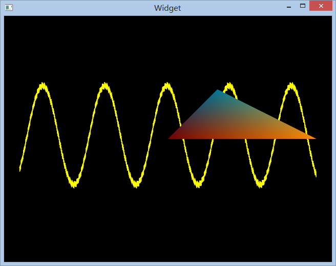

在Qt下共享openGL与openCL缓存
openCL的使用常常需要和openGL搭配起来，glut不错的选择，不过由于本人比较喜欢Qt，于是直接使用了QGLWidget进行绘图。
本文重点是介绍如何共享openCL和openGL的缓存(VBO)，和VBO的简单应用。
 >在QGLWidget下实现的openGL应用，其中正弦函数部分由openCL计算，Fork me on Github
简单的QGLWidget框架可以参考这篇→Qt OpenGL教程
从openGL中创建使用VBO
从openGL的角度来看，使用VBO（顶点缓存器）的几个步骤：
- 创建顶点缓存器
- 绑定（bind）顶点缓存器
- 使用顶点缓存器绘制
因为在qt里好像没有找到glBindBuffer这么些函数，于是乎只好用Qt自己封装好的QGLBuffer，使用起来还比较方便
buffer=new QGLBuffer(QGLBuffer::VertexBuffer);
buffer->create();
//相当于glGenBuffer
buffer->bind();
//相当于glBindBuffer
buffer->allocate(sizeof(GLfloat)*2048*2);
//相当于glBufferData
buffer->bind();
//绑定，绘制准备
glEnableClientState(GL_VERTEX_ARRAY);
glVertexPointer(2,GL_FLOAT,0,0);
glColor3f(1,1,0);
glDrawArrays(GL_LINE_STRIP,0,2048);
//绘制有一个坑爹的地方，一定要先create再bind再alloccate，乱了就什么也画不出来。
openCL&openGL共用VBO
openCL如果需要和openGL共享buffer，大致步骤如下：
- 创建一个支持openGL的上下文
- 从openGL已经创建好的VBO创建一个openCL buffer
- 连接buffer，释放buffer
我将这些东西封装到了 ldCLtempl.h，使用方法如下：
ldcl.init(wglGetCurrentContext(),wglGetCurrentDC());
//创建支持openGL的上下文
ldcl.setArg(buffer->bufferId(),CL_MEM_READ_WRITE);
//共享bufferldCLtempl.h的实现方法如下：
void init(HGLRC glContext, HDC glDisplay) {
cl::Platform::get(&platformList);
printPlatformInfo();
platformList[pid].getDevices(CL_DEVICE_TYPE_ALL,&deviceList);
printDeviceInfo();
cl_context_properties props[]={
CL_GL_CONTEXT_KHR, (cl_context_properties)glContext,
CL_WGL_HDC_KHR, (cl_context_properties)glDisplay,
CL_CONTEXT_PLATFORM, (cl_context_properties)platformList[pid](), 0
};
context=new cl::Context(deviceList, props);
//创建支持openGL的上下文
cmdQueue=new cl::CommandQueue(*context,deviceList[did]);
}
struct myBufferGL : public myBuffer {
vector<cl::Memory> mv;
myBufferGL(LDCL *fa, cl_mem_flags flags, GLuint bufobj) : myBuffer(fa,flags,0,0,0) {
buffer=new cl::BufferGL(*(fa->context),flags,bufobj);
//通过从openGL已经创建的buffer创建
mv.push_back(*buffer);
}
virtual void beforeRun() {father->cmdQueue->enqueueAcquireGLObjects(&mv);}
//从openGL获取buffer的控制权
virtual void afterRun() {father->cmdQueue->enqueueReleaseGLObjects(&mv);}
//释放控制权
~myBufferGL() {}
};纹理缓存的使用方法类似。
另外书上写的在执行openCL之前得先执行glFinish()，不过我没有执行也可以用，而且发现openCL是同步执行而不是异步执行的，似乎显卡是否支持同步有关。
blog comments powered by Disqus
Published
11 August 2013